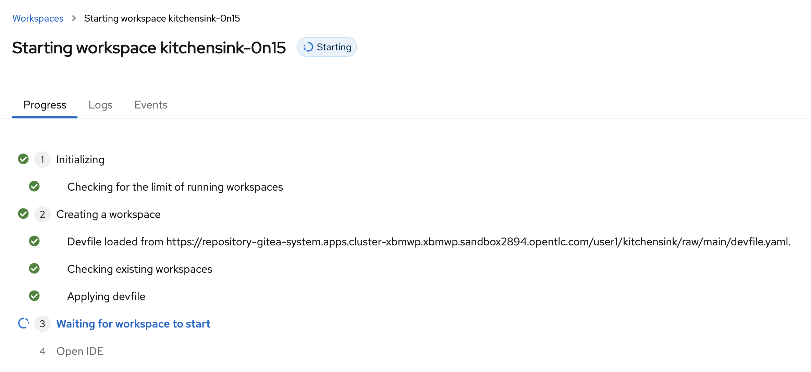

Prepare DevSpaces
This chapter only applies if you choose DevSpaces as the IDE to use throughout this guide.
Create Workspace
| If you’re running the guide in a laptop, you don’t need to do this. |
Please copy and paste the following link and open it in a browser. It will take you to a Red Hat DevSpaces deployment in the OpenShift cluster you’re interacting with in this lab. Use this credentials to log in and click on Allow selected permissions.
-
Username: %USERNAME%
-
Password: %PASSWORD%
https://devspaces.apps.%BASE_SUBDOMAIN%/#/https://repository-gitea-system.apps.%BASE_SUBDOMAIN%/%USERNAME%/kitchensink/raw/main/devfile.yamlAfter some seconds you will see that the devfile has been loaded and that your workspace is been created.

After a minute or two you’ll have the workspaces prepared and you’ll be prompted to answer this question: Do you trust the authors of the files in this folder?. Click on Yes, I trust the authors….